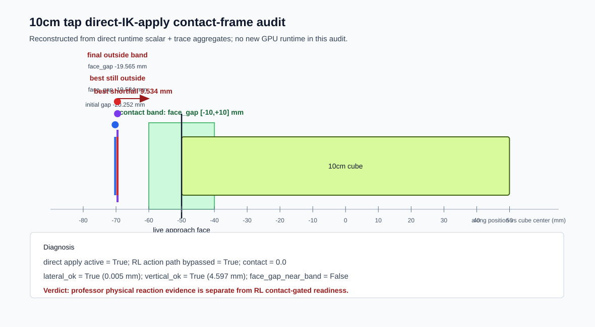

Local posthoc artifact only. No GPU runtime, dataset, training, robot control, SSH, B200, or Track A is launched by this audit.

{
"action_abs_max_trace": 0.0,
"along_gap_blocker": true,
"artifact_type": "cube10cm_tap_rl_direct_ik_apply_result_audit_v1",
"b200": false,
"best_along_m": -0.06953361555933953,
"best_face_gap_m": -0.019533615559339523,
"best_improvement_from_initial_m": 0.0007186830043792725,
"best_shortfall_to_contact_band_m": 0.009533615559339523,
"branch": "professor_cube10cm_tap_reaction_quality_tier",
"cap040_best_face_gap_m": -0.019507329910993576,
"cap040_best_shortfall_m": 0.009507329910993576,
"closed_loop_ik_err_mm_mean": 0.6174697866014219,
"closed_loop_ik_ok_rate": 1.0,
"contact_band_m": 0.01,
"contact_seen": 0.0,
"controller_mode": "external_closed_loop_direct_apply",
"cube_half_along_m": 0.05,
"dataset_generation": false,
"device": "cuda:0",
"direct_apply_active": true,
"direct_ik_apply_pass": false,
"direct_runtime_valid": true,
"face_gap_best_delta_vs_cap040_m": -2.6285648345947266e-05,
"face_gap_moved_toward_band": true,
"face_gap_near_band": false,
"final_along_m": -0.06956496760249138,
"final_face_gap_m": -0.01956496760249138,
"final_lateral_m": 4.930598606733838e-06,
"final_shortfall_to_contact_band_m": 0.009564967602491379,
"final_vertical_offset_m": 0.004597475752234459,
"gpu_runtime_launched_by_this_audit": false,
"initial_along_m": -0.0702522985637188,
"initial_face_gap_m": -0.020252298563718796,
"joint_delta_abs_max_trace": 0.4676227569580078,
"joint_delta_cap_rate_trace": 0.0,
"lateral_ok": true,
"local_posthoc_audit_only": true,
"max_disp_along_m": 0.0009225904941558838,
"max_speed_mps": 0.008078601211309433,
"next": {
"allowed_local_only": "review_target_geometry_kinematic_frame_and_reach_before_any_new_runtime",
"not_allowed": "lead_cap_sweep_dataset_rl_roarm"
},
"outputs": {
"html": "/home/cgxr/Documents/Robotics/RoArm_Project/claudedocs/runtime_logs/20260526_cube3cm_push_rollout_probe_20480/cube10cm_tap_rl_direct_ik_apply_visual_contact_audit.html",
"png": "/home/cgxr/Documents/Robotics/RoArm_Project/claudedocs/runtime_logs/20260526_cube3cm_push_rollout_probe_20480/cube10cm_tap_rl_direct_ik_apply_visual_contact_audit.png",
"svg": "/home/cgxr/Documents/Robotics/RoArm_Project/claudedocs/runtime_logs/20260526_cube3cm_push_rollout_probe_20480/cube10cm_tap_rl_direct_ik_apply_visual_contact_audit.svg"
},
"overshoot": 0.0,
"professor_physical_disp_evidence_threshold_m": 0.0005,
"professor_physical_reaction_evidence": "PASS",
"professor_physical_reaction_evidence_only": true,
"professor_physical_speed_evidence_threshold_mps": 0.005,
"reaction_context": 0.0,
"reaction_seen": 0.0,
"reaction_signal": 0.0,
"rl_action_path_bypassed": true,
"robot_control": false,
"shortfall_delta_vs_cap040_m": 2.6285648345947266e-05,
"ssh": false,
"status": "FAIL",
"still_blocked": {
"diffik_action_dataset": "BLOCKED",
"large_dataset": "BLOCKED",
"ppo_rl_training": "BLOCKED",
"roarm": "BLOCKED",
"tiny_action_dataset_dry_run": "BLOCKED"
},
"tap_success": 0.0,
"target_lead_abs_max_trace": 0.4676227569580078,
"target_lead_limit_rate_trace": 0.0,
"tcp_dist_min_m": 0.06953912228345871,
"track_a": false,
"training": false,
"verdict": "PROFESSOR_PHYSICAL_REACTION_PASS_RL_CONTACT_GATED_FAIL",
"vertical_ok": true,
"worst_face_gap_m": -0.024368952959775925,
"wrapper_only_explanation_falsified": true
}
{kind=link}
{kind=link}